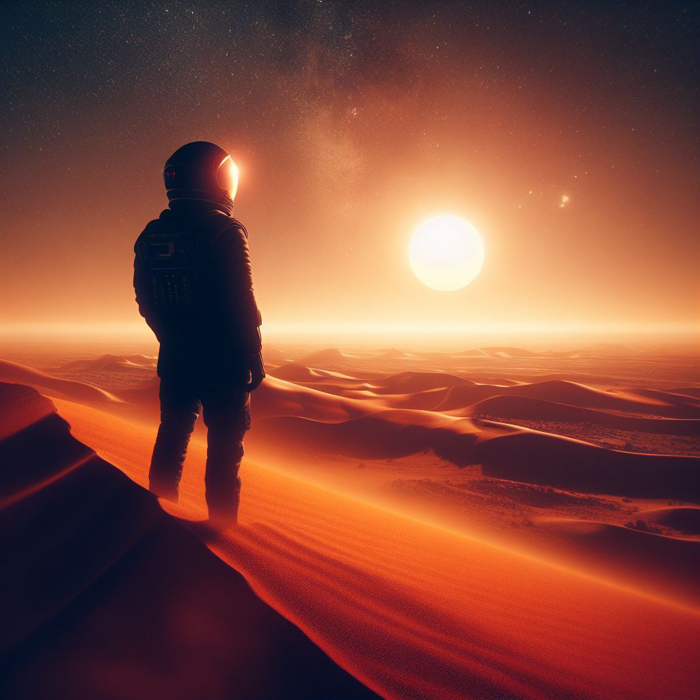

En quête d'aventure ? Nous vous offrons l'opportunité de visiter Mars ainsi que ses magnifiques paysages. Traversez les déserts en quad, surfez les collines en jetsky et skiez les dunes de sable rouge. Seul ou à plusieurs, vivez une aventure unique et découvrez des lieux encore inexplorés. Toutefois, n'ayez crainte, un système GPS installé dans chaque combinaison vous permettra de vous retrouver facilement et vous guidera où vous le désirerez.
Une fois sur place
Profitez de notre dernière innovation, le cyberchameau. Une expérience totalement inédite que vous ne retrouverez nulle part ailleurs. Traversez les vallées dans un confort inégalable qui vous permettra de profiter du paysage. Devenez l'un des premiers à bénéficier de ce moyen de transport insolite qui vous offrira des souvenirs inoubliables.

Enfin, comment mieux terminer la journée qu'en observant un merveilleux coucher de soleil. Soyez convaincus que ce que vous pourrez observer n'est en aucun cas comparable à ce que l'on peut observer sur Terre. Cet événement sera pour vous un souvenir précieux que vous garderez soigneusement dans votre mémoire.